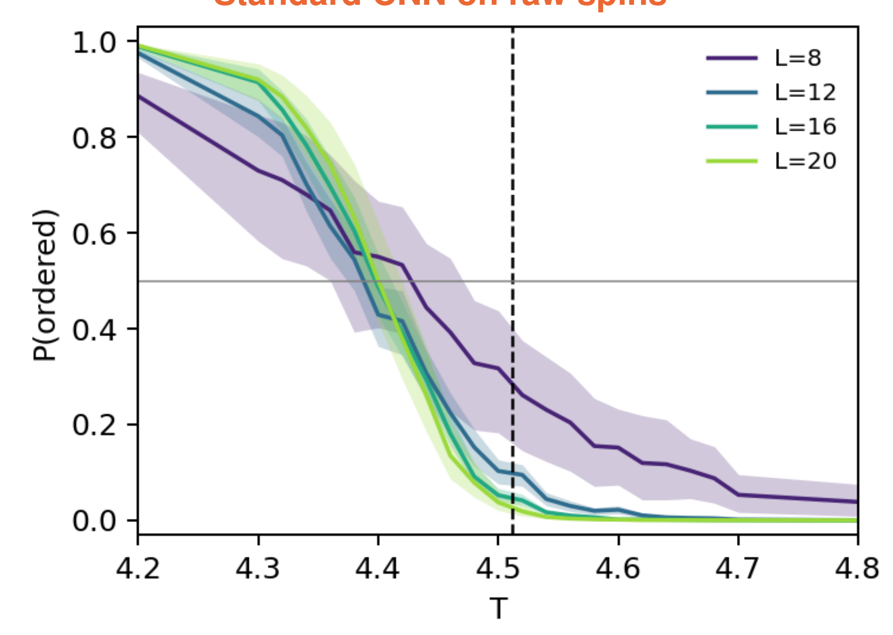
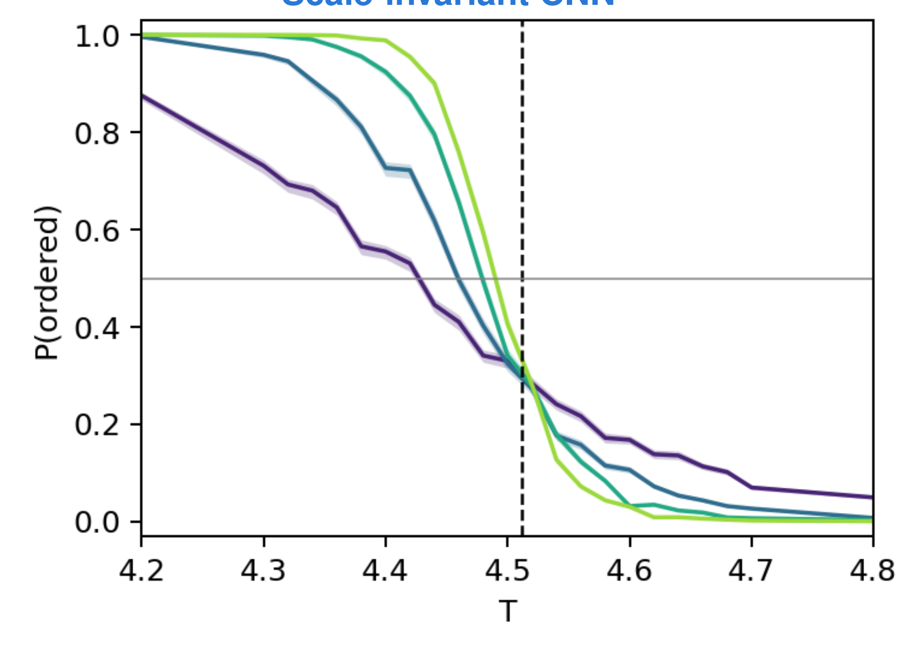
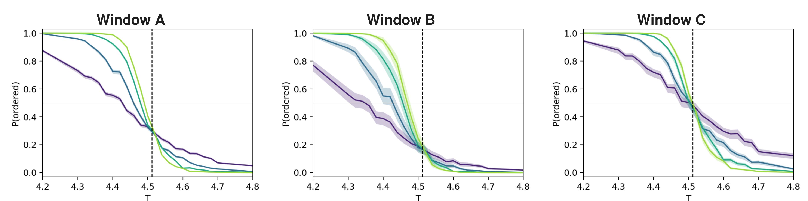
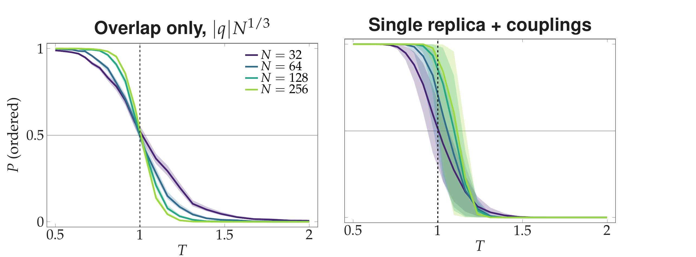
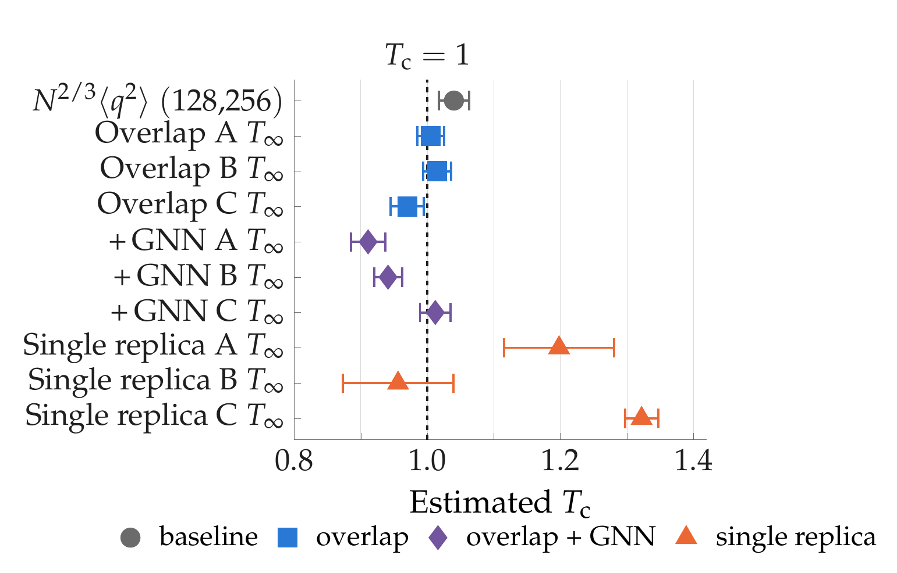

Can a Neural Network
Measure a Critical Temperature?
Finite-size scaling of neural-network classifier outputs: critical temperatures of the 3D Ising model and the Sherrington–Kirkpatrick spin glass.
The question
Neural networks are often used to locate phase transitions. They are trained on clearly ordered and clearly disordered samples, and the temperature where the output is ½ is taken as the critical temperature Tc. But ½ only marks where the network is undecided. Is that a measurement of Tc, or an artefact of the training?
The answer
It is a measurement only if the network sees a quantity that looks the same at Tc for every system size. Then Tc is where the output curves for different sizes cross, whatever the network learned. Tested on the 3D Ising model (within 0.01 of Tc) and on a spin glass (within 0.05).
01Watch a magnet near its critical point
A 3D Ising magnet: each cell is a spin pointing up (dark) or down (light). This is a live Monte Carlo simulation running in your browser, shown as one slice through the cube. Drag the temperature through Tc = 4.5115 and watch the order appear and vanish.
Orange-tinted cells belong to the cluster flipped in the last Wolff step (spins are shown relative to the majority direction). Near Tc the clusters are huge and span the whole box: the system has no typical length scale. Single-spin Metropolis updates struggle there (critical slowing down), which is why the thesis uses Wolff cluster moves for the Ising data.
02Find Tc yourself: where the curves cross
Near Tc an observable depends on temperature and system size only through (T−Tc)·L1/ν. So a suitably rescaled quantity gives curves for different sizes that all pass through one point, at Tc. Run a fresh simulation for three lattice sizes and see for yourself.
Honest caveat: these are small lattices, so crossings sit a little away from Tc (corrections to scaling), and the plot is noisy at low sample counts. The thesis uses L = 8–20 and averages over five training runs.
03The same data, two networks, two answers
Both networks are trained on the same simulated Ising configurations, labelled ordered (far below Tc) or disordered (far above). They never see the region around Tc. Only the input differs.


How the scale-invariant network works
A bias-free convolution with tanh gives a local field φx. Averaging it gives one number M that flips sign when all spins flip, like the magnetization. Only |M|·Lβ/ν (β/ν = 0.518) reaches the final classifier.
Because that input has the same distribution for every size at Tc, the output curves must coincide there, whatever the classifier learned. The thesis tests this rather than assuming it.
Three different training windows
Windows A, B and C place the training temperatures differently on purpose. For the scale-invariant network the window moves the height where curves meet (0.30, 0.17, 0.48) but not the temperature (4.521, 4.518, 4.520).
A physical estimate must not depend on a choice like that. Ordinary CNNs fail this test: their estimates change with the window by 0.04 to 0.21.

04A harder case: a spin glass
In the Sherrington–Kirkpatrick spin glass every pair of spins is coupled with a random sign, so there is no magnetization to look at. Its critical temperature is known exactly (Tc = 1), which makes it a clean test.


05The numbers
Extrapolated estimates T∞ of the critical temperature (mean over five training runs; bars are the combined run-to-run and bootstrap uncertainty), from the thesis tables.
3D Ising model · true Tc = 4.5115
SK spin glass · exact Tc = 1
| 3D Ising, size crossing (16, 20) | Win. A | Win. B | Win. C |
|---|---|---|---|
| Scale-invariant CNN | 4.521(7) | 4.518(7) | 4.520(8) |
| Binder cumulant (no ML) | 4.522(5) | ||
| ⟨|m|⟩·Lβ/ν (no ML) | 4.521(4) | ||
| Per-size CNN, level crossing P = ½ (extrapolated) | 4.395(19) | 4.415(24) | 4.438(7) |
What the network does and does not contribute
Once the input is a scaling quantity, the crossing temperature is fixed by the data, and the learned function only sets the height where curves meet. In both models the network reproduced the conventional estimator without improving on it, and the exponent (β/ν = 0.518 for the Ising model, 1/3 for SK) has to be supplied. With a deliberately wrong β/ν = 0.1 the Ising estimate moves by about 2 % and the window dependence returns.
Limitations: small lattices (L ≤ 20, N ≤ 256), one data set per model, corrections to scaling seen as a drift but not fitted. Natural next steps: determine the exponent from the data, and the 3D Edwards–Anderson model.
Methods in brief
Ising data: Metropolis sweep + 5 Wolff cluster flips per step, L = 8, 12, 16, 20, 1000 configurations per temperature. SK data: parallel tempering (replica exchange) with two replica ladders per disorder sample, N = 32–256; equilibration checked with the exact energy–overlap identity. Networks: 3D CNNs with periodic padding and global average pooling (one network handles all sizes); for SK a message-passing GNN on the complete graph with the couplings as edge weights, feeding an LSTM over 16 snapshots. Training: binary cross-entropy, Adam, PyTorch; five seeds and three training windows per network; uncertainties combine bootstrap and run-to-run spread.